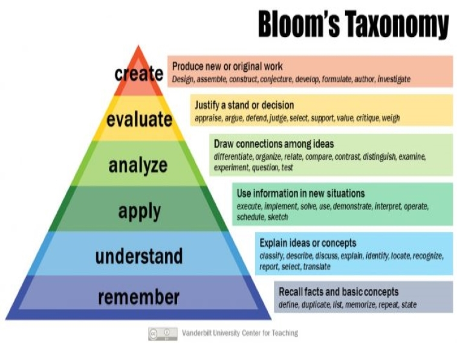

In 1956, Benjamin Bloom with collaborators Max Englehart, Edward Furst, Walter Hill, and David Krathwohl published a framework for categorizing educational goals: Taxonomy of Educational Objectives. Familiarly known as Bloom’s Taxonomy, this framework has been applied by generations of K-12 teachers and college instructors in their teaching.
The framework elaborated by Bloom and his collaborators consisted of six major categories: Knowledge, Comprehension, Application, Analysis, Synthesis, and Evaluation. The categories after Knowledge were presented as “skills and abilities,” with the understanding that knowledge was the necessary precondition for putting these skills and abilities into practice.
While each category contained subcategories, all lying along a continuum from simple to complex and concrete to abstract, the taxonomy is popularly remembered according to the six main categories.
Knowledge “involves the recall of specifics and universals, the recall of methods and processes, or the recall of a pattern, structure, or setting.”
Comprehension “refers to a type of understanding or apprehension such that the individual knows what is being communicated and can make use of the material or idea being communicated without necessarily relating it to other material or seeing its fullest implications.”
Application refers to the “use of abstractions in particular and concrete situations.”
Analysis represents the “breakdown of a communication into its constituent elements or parts such that the relative hierarchy of ideas is made clear and/or the relations between ideas expressed are made explicit.”
Synthesis involves the “putting together of elements and parts so as to form a whole.”
Evaluation engenders “judgments about the value of material and methods for given purposes.”
